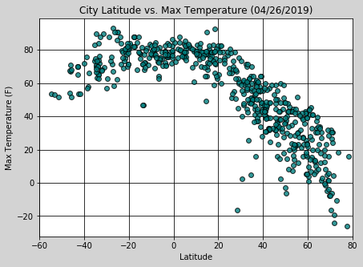

Summary: Latitude vs. X

This site details the results of a project focused on analyzing the weather and climate based off latitude.
OpenWeatherMap API was used to create a dataset of weather and climate information from 565 cities selected randomly from around the globe. The data in that dataset is accesible for viewing on the data page.
Using this dataset, Matplotlib was used to plot various aspects of climate and weather vs. latitude. These various aspects were max temp, cloudiness, wind speed, and humidity. This site provides the plots created as part of this analysis, as well as summations of the conclusions drawn.
The graph in the upper left is provided as an example of the available graphs.
Navigation
Use this to navigate to an individual plot and recieve a detailed analysis.